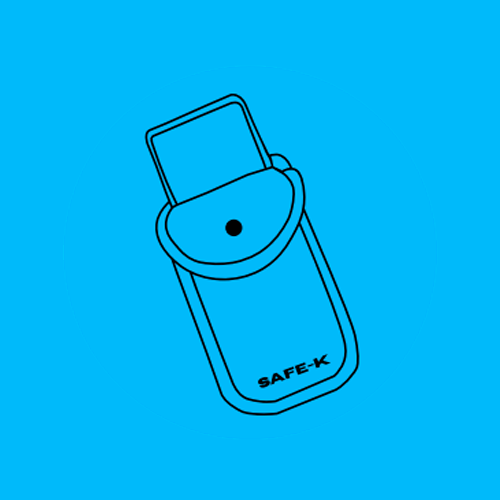
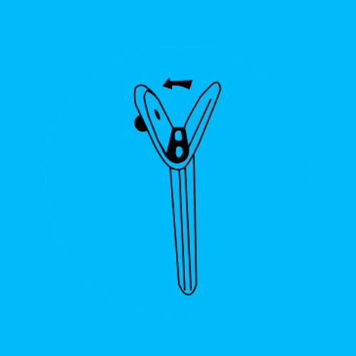
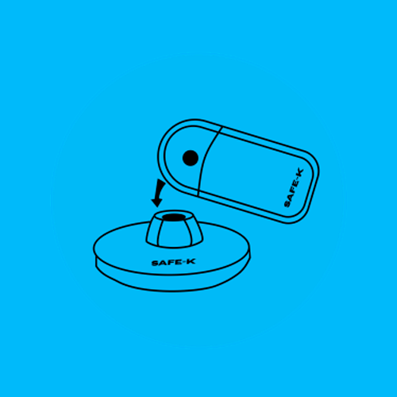
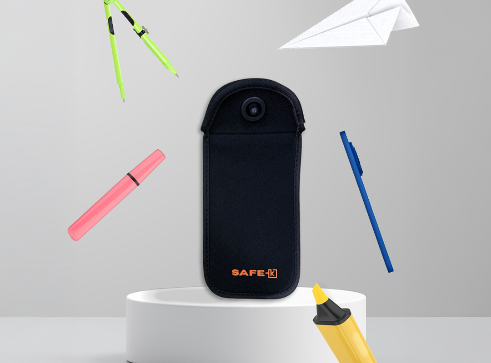

Guarde o celular
Ao entrar no espaço, coloque seu aparelho dentro da bolsa SAFE-K.
Uma solução simples
Seu aparelho continua com você. A atenção fica livre para participar do que está acontecendo ao redor.

Ao entrar no espaço, coloque seu aparelho dentro da bolsa SAFE-K.

A bolsa é trancada e continua com você durante toda a experiência.

Procure a área de desbloqueio e encoste a bolsa em uma base.
Antes, durante e depois
Além da bolsa, é importante que todos entendam a proposta e saibam onde acessar o aparelho.
Defina as áreas de uso, os pontos de desbloqueio e a equipe responsável por orientar os participantes.
Comunique como funciona a pausa, que o celular fica com o dono e como acessar o aparelho quando necessário.
Mantenha as orientações acessíveis e organize o fluxo de desbloqueio durante a atividade e na saída.

Produto do site atual · identidade anteriorConheça a bolsa
Acesso ao aparelho
Não. O celular continua em sua posse, dentro da bolsa. Você permanece com o aparelho durante todo o período de uso.
Basta encostar a bolsa em uma base de desbloqueio, disponível nos pontos definidos pela organização do espaço. A equipe local orienta o acesso.
Procure a área de desbloqueio ou a equipe responsável. A organização deve comunicar os pontos de acesso e orientar situações que demandem o uso do aparelho.
O funcionamento apresentado é a restrição de acesso físico ao aparelho pela bolsa trancada. Não se trata de uma promessa de bloqueio de sinal, chamadas ou conectividade.
Vamos construir essa experiência
Conte sobre o seu espaço. A gente ajuda você a entender o próximo passo.